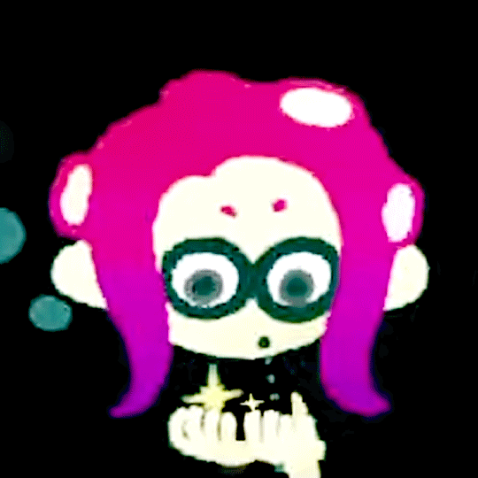

Asof's Site (mediaworld)
here's what i think about some media!! mainly games and arthouse movies.. you should experience 100% of these okay!! my asof command!!
| Title | Review |
|---|---|
| corru.observer | a really intriging and pretty experience.. navigate a dying alien biocomputer to solve a mystery!! a really really cool part about it is that it's all made out of standard html elements.. as of right now, it's all 3d-transforms with naray a canvas in sight.. |
| splatoon 2: octo expansion |
the story mode that i think best exemplifies some of what i like about splatoon.. it's a challenging gameplay experience, shore.. but there's also a great story there!! there's some information revealed as you play through memcakes and chatlogs, and a fantastic conclusion that i think really exemplifies eight's whole deal.. this is eight:  |
| in stars and time | a timeloop at the very end of an rpg adventure!! play as the looping rouge, siffrin, as you help your party defeat the king.. it's great being in a position to help everyone else, isn't it? |
| the beginner's guide | a game by davey wreden (of stanley parable fame) about a collection of art-games by a guy named coda.. you should definitely 100% play it if you have ever thought about the creative process at all i think!! |
| picayune dreams | really cool vampire survivors bullethell-em-up!! play as ever-weary space fighter, cyl, as you tear through endless hordes of enemies.. there's also a chunk of yume nikki in there for the story sections.. there's a suprising amount of depth to the upgrades and skill tree, and you simply cannot discount the enjoyment of exploding 10000 guys with your many weapons and projectiles and such!! the music also rocks.. |
| brazil (1985) | a pretty psychological arthouse movie.. contains a lot of stuff about beauracracy and whatnot.. give it a watch!! |
| everything everywhere all at once | well this movie rocks, in many brilliantly obvious ways.. it's a lot of things, and manages to do something incredible in how it stitches together the big stuff with the tiny stuff, but it's also funny and deeply sincere!! |
| sorry to bother you | a movie about assimilation.. it's intense, but leaves space for absurd humor too.. |
| i saw the tv glow |
this one is skin crawling if you happen to be transgender.. like wow!! be careful about the headspace you go into this film with it mayy mess you up!! crying mess-styles.. despite how it is.. it's still a wierdly hopeful movie!! really recommend it.. |
| brocolli soup |
a slightly surreal comic about a kid named brocolli and their friend lady doris, who live in the void and drink tea, moray less.. now, obviously it wouldn't be on this list if it was just that, but i don't want to spoil it!! if i had to recommend it, it'd be something like "bee and puppycat, but things actually happen".. |
| awful hospital |
a wierd long comic about a mother named fern who has to fight through a hosptial that is pretty terible, making allies and besting foes!! it depicts a lot of disease and body horror and such (cartoony, but still) so it might not be for everyone.. the parts of this that i most enjoyed were the character work and the nature of the reality fern's in.. it's very interesting okay!! |
| mindwave (demo) | really fun character work, wonderful animation and music, and of course it's a warioware-like!! needless to say, cannot wait for the full game, but you can check out the demo right now!! so you should!! |
| exapunks | a really fun "low level" programming game from zachtronics!! send little "exas" around between network devices, manipulating files, devices and so on and so forth.. the story's interesting too!! |
| lab-grown opal | splatoon fanfiction.. the character writing is wonderful, and it manages to convey a lot about the metro post-tartar, like how the people still there are doin.. it has harmony and also iso padre!! read it okay.. |
| ... |
UNDER CONSTRUCTION:
more reviews  |